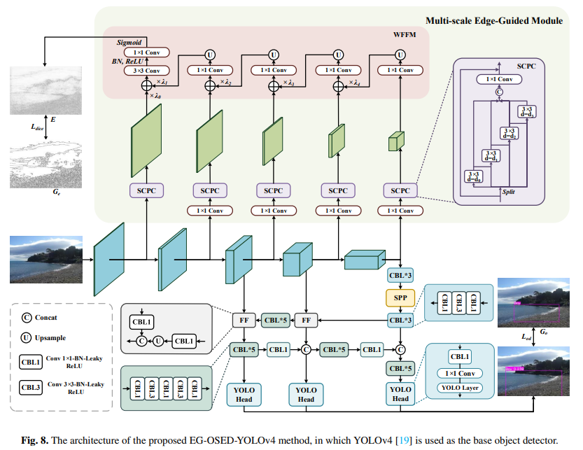
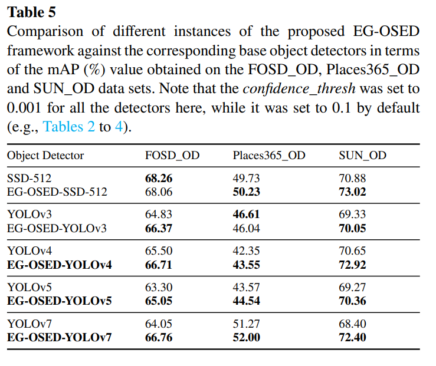
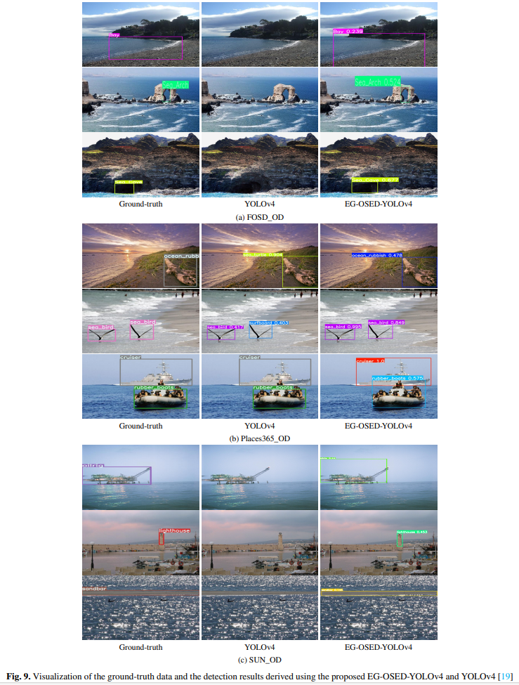

Edge-Guided Oceanic Scene Element Detection
|  |
The architecture of the proposed EG-OSED-YOLOv4 method, in which YOLOv4 is used as the base object detector.
Abstract
Oceanic environmental monitoring is critical to environmental protection. As a core technique, Oceanic
Scene Element Detection (OSED) plays an important role. Existing oceanic object detection approaches are
usually focused on a single category. Therefore, a multi-category OSED data set is demanded. Considering
oceanic scene elements normally present large-scale complicated structures, the edge cue is particular
useful for representation of these elements. However, none of existing object detection methods take
this cue into account. To address the two problems, we first collect and annotate three OSED data sets,
which comprise a total of 10,040 images and 60 categories. Then we propose a generic Multi-scale
Edge-Guided Module (MSEGM), which can be inserted into an object detection network, for guiding the
backbone toward learning edge characteristics. An Edge-Guided Oceanic Scene Element Detection (EG-OSED)
framework is built on top of this module and a base object detector, which can be end-to-end trained
using a multi-task learning scheme. A series of experiments are conducted on the three OSED data sets.
The results demonstrate that the EG-OSED framework outperforms its base object detector which does not
utilize edges. We believe that these promising results should be due to the importance of edges to
representation of oceanic scene elements.
Links


Experimental Results
|  |
Quantitative Results on the FOSD_OD, Places365_OD, SUN_OD data sets.
|  |
|
|
Qualitative Results derived using EG-OSED-YOLOv4 on the FOSD_OD, Places365_OD, SUN_OD data sets